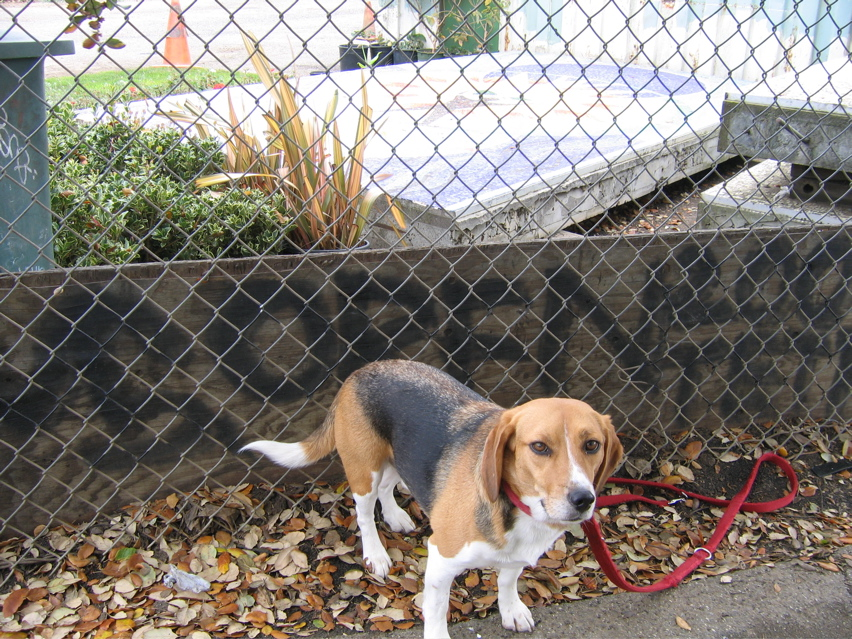

<--Previous Up Next-->

The secret of Franklin Square
Huxley found this 40-year-old mosaic, Anthony Stellon's "The Brotherhood of Man", in the gardening area of Franklin Square Park while walking to work last year. It was being used for storing potted plants. Dave passed the word to San Francisco mosaic expert Lillian Sizemore, she to hike leader Jeanne Halpern, and Jeanne got Rec & Parks to clear it off in time for the hike. Good find, Hux!